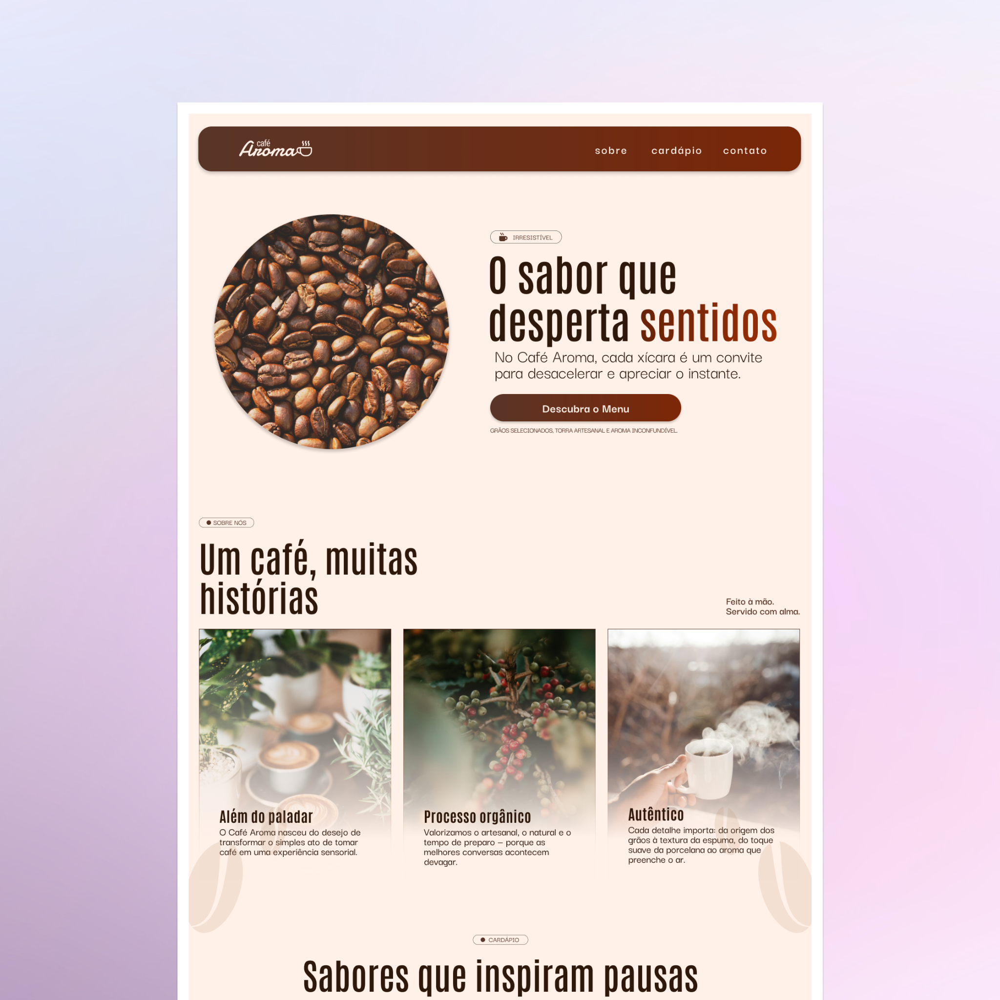
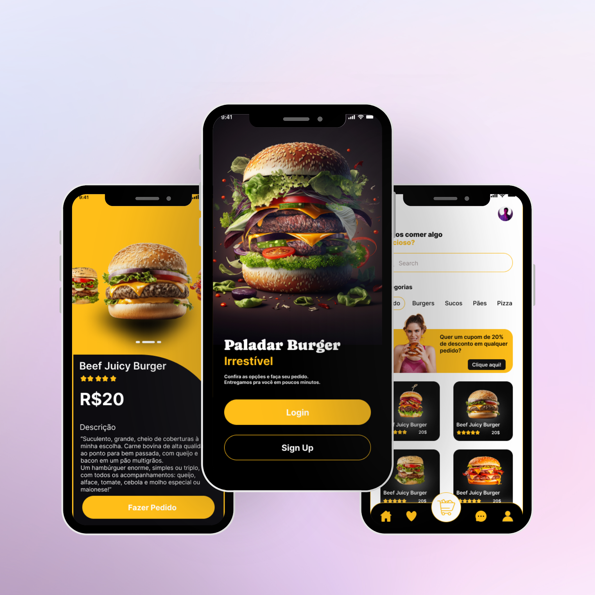

Olá, eu sou a Tauany 👋
UX & Frontend Developer
Transformo ideias em experiências significativas. Vamos construir algo incrível?
Olá, eu sou a Tauany 👋
Transformo ideias em experiências significativas. Vamos construir algo incrível?

Criação de landing page com foco em estética, clareza e experiência do usuário.

Projeto premiado no desafio BHS. Um redesign completo de experiência do usuário.
Minha jornada no design começou com a curiosidade sobre como as pessoas se conectam com produtos e marcas — e como o design pode tornar essa relação mais humana.
Atuei por muito tempo na área de criação da KB Comunicação e, atualmente, sou empregada pública e atuo na Diretoria de Tecnologia e Relacionamento na SPPREV, onde aplico princípios de clareza, empatia e experiência do usuário em cada comunicação.
Nos últimos anos, mergulhei de vez no universo UX e da tecnologia, unindo minha bagagem em comunicação à criação de interfaces e experiências digitais. Hoje, meu foco é transformar ideias em soluções intuitivas e funcionais, sempre com propósito e sensibilidade.
💬 Vamos construir algo incrível juntos?